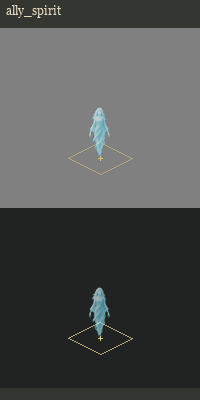
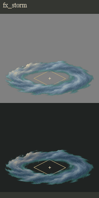
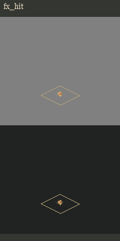
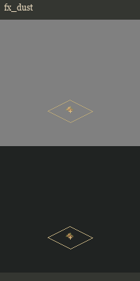
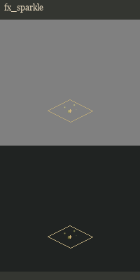
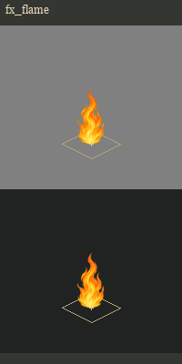
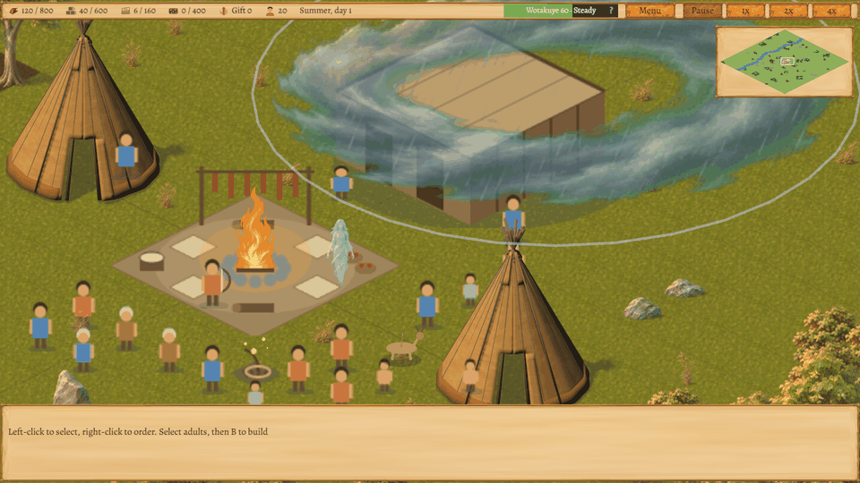

38 frames for arrows, spirit, storm, hit dust, foot dust, completion glints and flame. Candidate art awaits Claude review. Each animated frame was generated as an edit of its base painting.
All frames and anchors · Prompts and processing notes · Browser checks · Loop measurements






This 2.4-second excerpt plays once: the three animations have different periods, so the capture's endpoints do not form one shared loop. Reload to replay. The individual GIFs above loop at their own manifest rates. Captured through normal game renderers in a disposable copy. AB3 ground and AB5 plants are review context; people and other buildings retain existing placeholders. The central fire placeholder still includes its old static flame beneath the candidate sprite.

Camp at 1x / 2560 · Camp at 2x / 1280 · Flying arrow · Stuck arrow · Completion, hit and foot dust